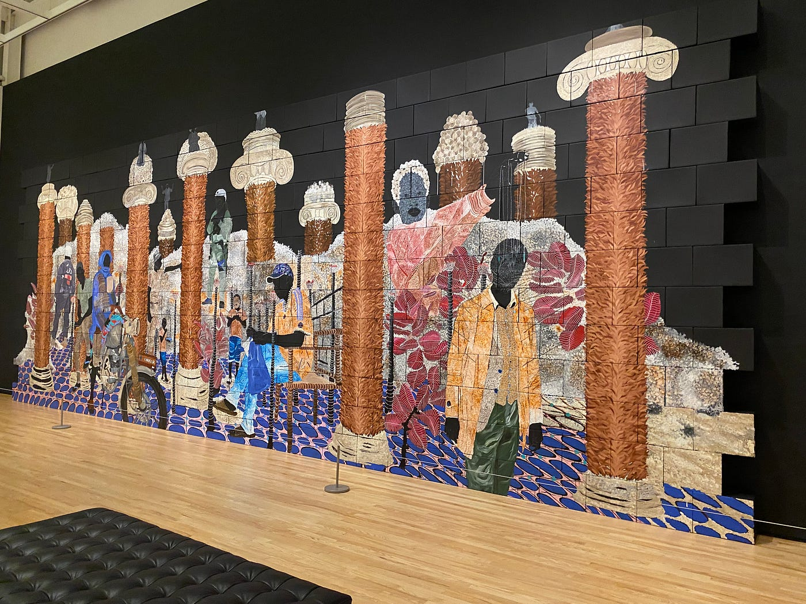
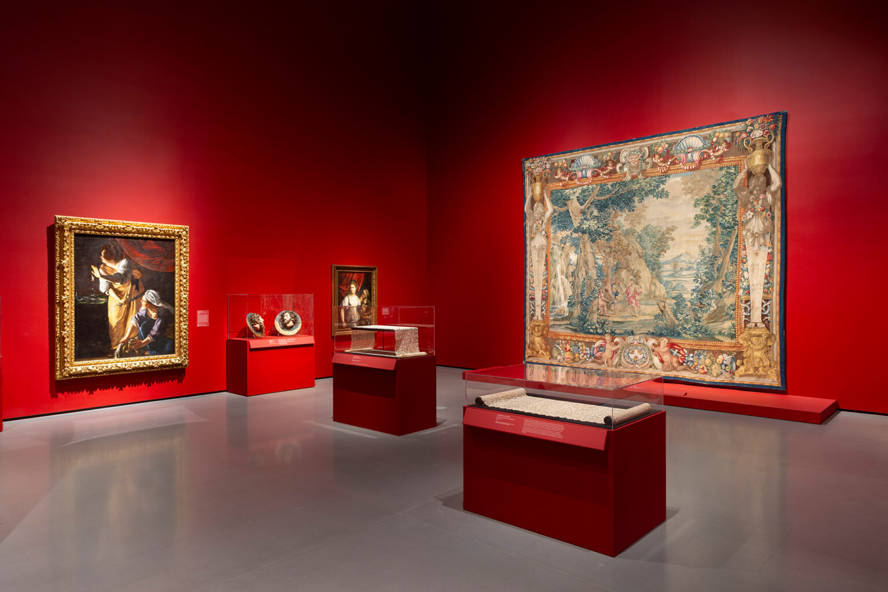

NO it is not like 'The Wire'! Last Updated 2-08-2025
The Baltimore Museum of Art (BMA) houses a lot of my favorite memories. It is an art museum located next to the Johns Hopkins Homewood Campus on 10 Art Museum Dr. Amazingly enough, entrance to the museum is free of charge, though some of their limited time special exhibitions are ticketed. Some of my personal favorite free collections to visit are the sculpture garden, contemporary,and antioch mosiacs.
Growing up, my grandparents would always take me to the BMA to explore different exhibitions. Since I loved drawing, my grandfather would always ask me to help him sketch some of his favorite sculptures. Coincidentally, I have also experienced a lot of my career "firsts" there. The BMA was the first place to display my work in an exhibition (the Baltimore City School Student Art Exhibition). And it was also where I scored my first internship (The experience that ultimately inspired my graphic design journey).

November 20, 2022 — April 2, 2023
October 1, 2023 — January 7, 2024
November 19, 2023 — May 4, 2025